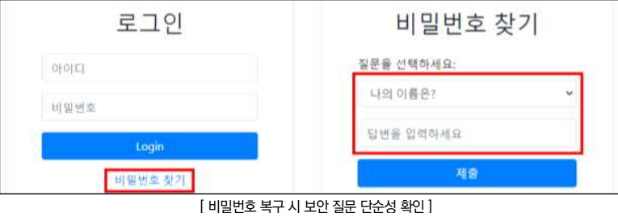
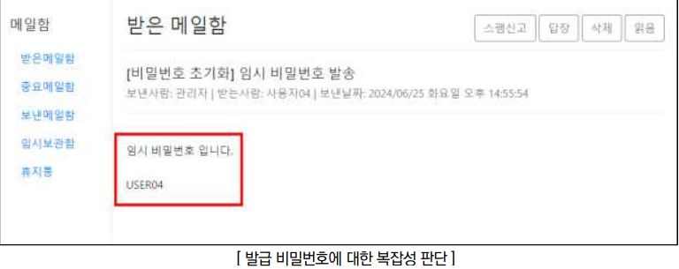
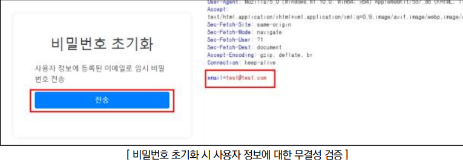

점검 목적
- 비밀번호 복구 기능 사용 시, 단순 정보(이름, 사번, 아이디 등)만을 활용하거나 SMS나 이메일 인증 시 발급되는 임시 비밀번호가 동일하거나 유추 가능 여부 점검
- 비밀번호 복구 로직을 유추하기 어렵게 구현하고, 인증된 사용자 메일이나 SMS에서만 복구 비밀번호를 확인할 수 있도록 하여 비인가자가 사용자 비밀번호를 획득 및 변경하지 못하도록 방지하기 위함
판단 기준
양호 : 비밀번호 재설정 시 난수를 이용하여, 인증된 사용자 메일이나 SMS로 임시 비밀번호 또는 비밀번호 재설정을 위한 링크가 전송될 경우
취약 : 비밀번호 재설정 시 일정 패턴으로 재설정되고 웹 사이트 화면에 바로 출력될 경우
조치 방법
- 비밀번호 복구 로직을 강화하고, 인증된 사용자 메일이나 SMS에서만 재설정된 비밀번호를 확인할 수 있도록 하여 비인가자가 비밀번호를 획득하지 못하도록 조치
점검 방법
Step 1) 비밀번호 복구 기능 유무를 파악하고, 복구 과정에서 보안 질문이 추측 가능하거나 소셜 엔지니어링으로 쉽게 답을 찾을 수 있는 단순 정보를 요구하는지 확인

Step 2) 비밀번호 복구 시 재설정된 비밀번호에 대하여 추측가능한 일정 패턴으로 발급 유무 확인

Step 3) 비밀번호 복구 과정에서 해당 계정에 등록된 이메일 및 전화번호가 아닌 공격자의 정보로 변조가 가능한 포인트의 점검 및 패킷 변조를 통해 공격자 측으로 인증 번호 및 임시 비밀번호 발급 여부 확인

조치 방법
1. 추측이 어렵고 공개적으로 알 수 없는 정보를 기반으로 한 보안 질문 사용
2. 비밀번호 재설정 과정에서 사용자의 메일이나 SMS로 인증 코드 전송 후 이를 확인하는 2단계 인증 도입
3. 사용자의 개인정보(연락처, 주소, 메일 주소 등)로 비밀번호의 생성을 제한하며, 불규칙적이고 최소 길이(6자 이상 권고) 이상의 복잡도를 만족하는 비밀번호를 발급 및 웹 사이트 화면에 바로 출력하지 않고 인증된 사용자의 메일이나 SMS로 전송되게 구현
4. 비밀번호 재발급 검증 실패에 대한 임계값을 설정하여 일정 횟수 이상 실패한 경우 다른 방식으로 비밀번호 찾기 기능을 제공하고, 검증 후 기존의 비밀번호가 아닌 임시 비밀번호를 발급하도록 설계하며, 사용자가 임시 비밀번호를 재사용하지 못하도록 발급받은 즉시 새로운 비밀번호로 재설정하도록 구현